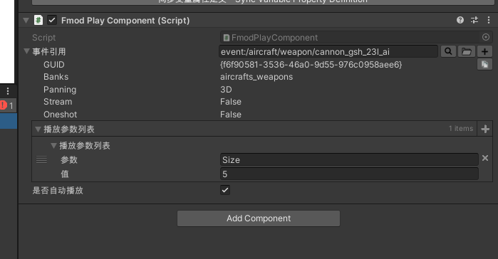

1. FmodPlayComponent 使用说明 Usage Guide
简介 Introduction
FmodPlayComponent 是一个 MonoBehaviour 组件，用于异步加载并播放 FMOD 音效。通过关联 EventReference 和 PlayParams 实现播放指定 FMOD 事件及其参数的功能。
FmodPlayComponent is a MonoBehaviour component that asynchronously loads and plays FMOD sound effects. By linking an EventReference and PlayParams, it plays the specified FMOD event along with its parameters.

如何使用 How to Use
将 FmodPlayComponent 挂载到需要播放音效的 GameObject 上。
在 Inspector 面板中，找到 EventReference 属性，将需要播放的 FMOD 事件拖拽到该属性中。
在 Inspector 面板中，找到 PlayParams 属性，可以添加多个参数来控制播放效果。每个参数包含一个 key 和 value，其中 key 为 FMOD 事件中的参数名称，value 为设置的参数值。
Attach FmodPlayComponent to the GameObject that needs to play the sound effect.
In the Inspector panel, find the EventReference property and drag the FMOD event you want to play onto it.
In the Inspector panel, find the PlayParams property, where you can add multiple parameters to control playback. Each parameter consists of a key and a value: the key is the parameter name defined in the FMOD event, and the value is the value to set.
以上是 FmodPlayComponent 的使用说明，如有疑问，请查看官方文档或联系开发者。
This concludes the FmodPlayComponent usage guide. If you have any questions, please consult the official documentation or contact the developers.